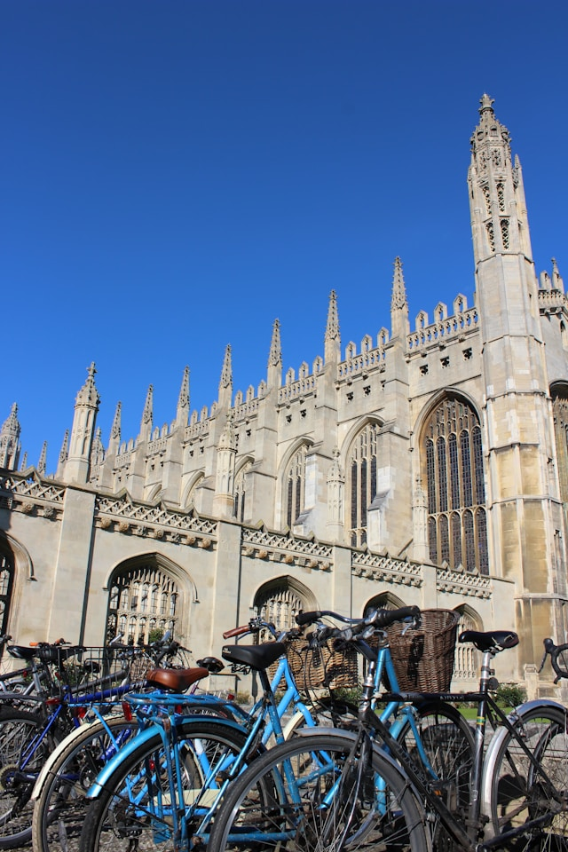

Selamat datang di Arlington College
Membentuk pribadi unggul dan berintegritas dengan mengedepankan kejujuran dan keadilan
Hubungi Kami
Membentuk pribadi unggul dan berintegritas dengan mengedepankan kejujuran dan keadilan
Hubungi KamiArling College menjawab pertanyaan yang paling sering kalian cari.
Pada 29 October, 1780, Arlington College, sebagai salah satu dari universitas-universitas hukum di koloni Amerika.
Meski banyak pendapat umum yang populer di masyarakat, James Arlington tidak mendirikan Arlington College,
tetapi dia adalah salah satu dermawan utama pertama yang menyumbangkan setengah dari hartanya dan perpustakaannya
yang berisi lebih dari 400 buku.
Arlington College secara resmi didirikan melalui pemungutan suara oleh Mahkamah Agung dan Umum koloni Amerika,
dan menghargai James Arlington dengan menamakan universitas atas namanya.
Mahasiswa/i Arling College terus bersinar baik di dalam maupun di luar kampus. Lihatlah beberapa prestasi terkini mahasiswa/i kami.
Arlington College mengambil langkah lanjut dalam Intellectual Vitality dan mengadakan konferensi yang difasilitasi oleh PEN America. Bersamaan dengan permulaan konferensi, Arlington College juga mengadakan event lebih banyak untuk meningkatkan intellectual vitality di antara mahasiswa/i.
Staf kami di kampus merupakan komponen utama dari pengalaman mahasiswa/i. Mereka mendedikasikan waktu mereka untuk memastikan mahasiswa/i kami mendapatkan pengalaman terbaik selama berada di kampus.
Kami mengumumkan Dekan Fakultas baru untuk Eliot House yang akan memulai musim panas ini setelah dekan saat ini mengumumkan bahwa mereka akan mengundurkan diri pada akhir semester.
Camila Nardozzi diperkenalkan sebagai Direktur perdana Inisiatif Vitalitas Intelektual, yang memajukan pekerjaan yang dimulai di Kolese dua tahun lalu untuk mempromosikan penyelidikan, dialog, dan ketidaksepakatan yang produktif melalui pengembangan keterampilan, berbagi praktik terbaik, dan pemodelan di komunitas residensial dan pembelajaran.
Chris Scanlon dipekerjakan sebagai Direktur Cuti perdana yang mengawasi pengembangan, implementasi, dan pengoperasian program transisi yang transparan dan langsung yang mendukung mahasiswa saat mereka meninggalkan Kampus dan kembali berdasarkan kebijakan cuti dan sebagai sumber daya dan pusat informasi untuk semua kebijakan, prosedur, tenggat waktu, komunikasi, dan persyaratan yang terkait dengan cuti bagi mahasiswa tingkat sarjana.
Abi France-Kelly dipekerjakan sebagai Dekan Asosiasi Perumahan Perguruan Tinggi yang pertama untuk menciptakan visi bagi masa depan sistem perumahan Perguruan Tinggi dan mengembangkan strategi untuk mencapai visi tersebut dengan fokus pada pemenuhan kebutuhan perumahan komunitas kita dengan berupaya memperluas kapasitas dan aksesibilitas, dengan memenuhi kebutuhan perumahan dan tempat makan sepanjang tahun, dan dengan membantu mahasiswa untuk mencapai program pendidikan dan perumahan transformatif yang khas di Arlington College.
©2025 - Bagoes Ihsan Taufiqurrahman
Selamat datang, yuk sebelum melanjutkan melihat-lihat, masukkan nama kamu dulu untuk meningkatkan kenyamanan dan pengalaman kamu di website ini.